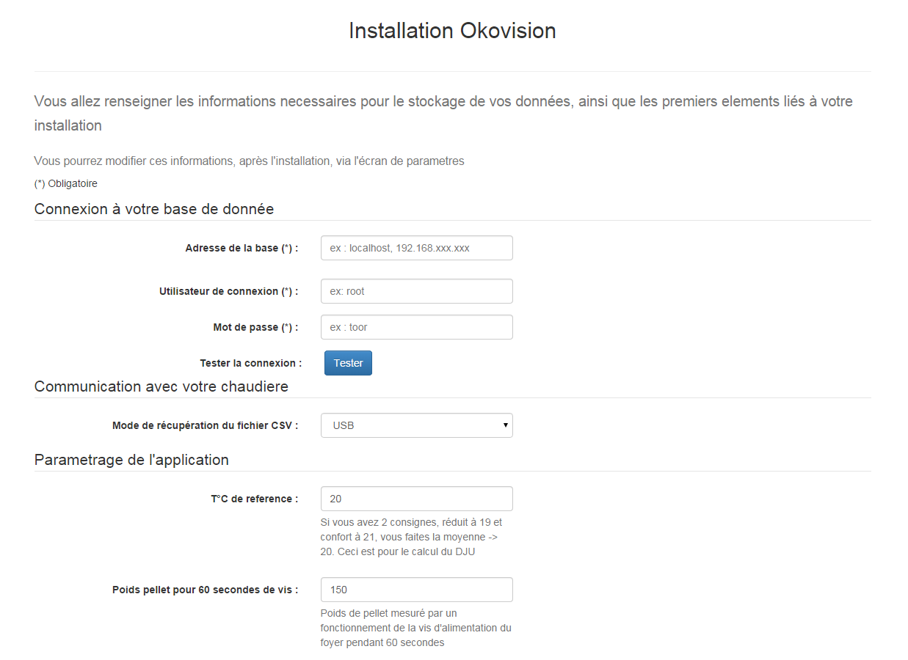
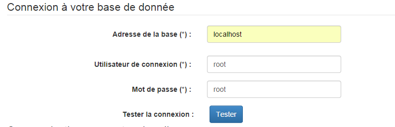
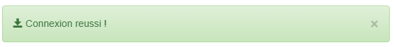
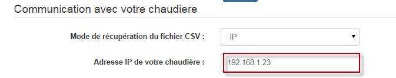
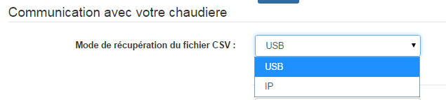
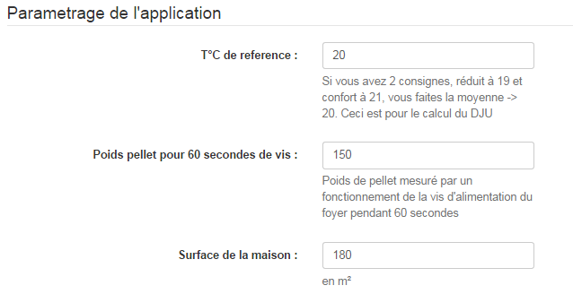
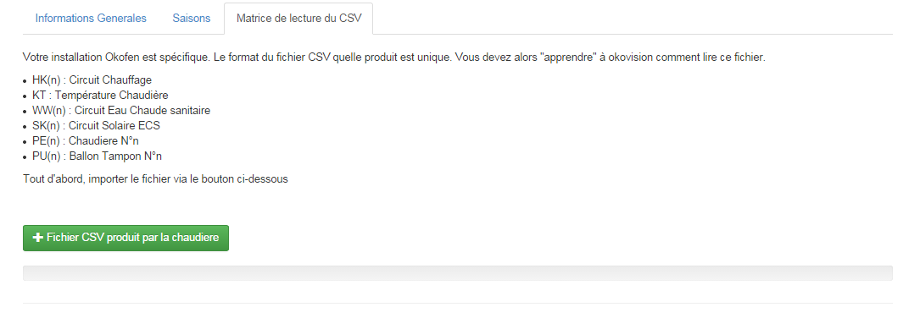
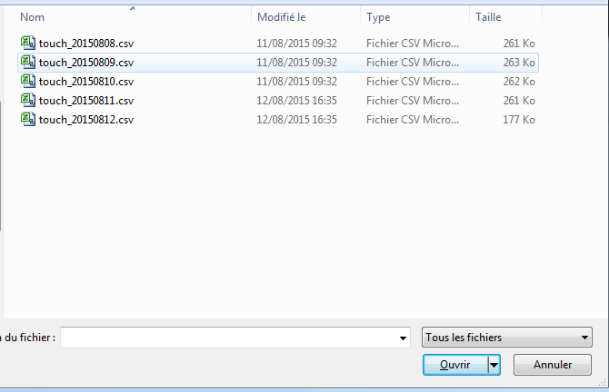
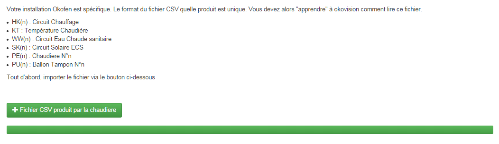
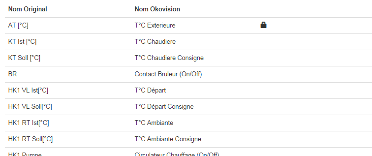

Setup#

Configuration / Connexion à la base de donnée#
- Si vous êtes sous windows et que vous avez suivi le tuto, mettre localhost, root/root (comme dans l'image ci-dessous).
- Si vous êtes sous rpi/linux, localhost, pour usr / mot de passe, c'est vous qui savez.
- Si vous êtes sur Nas Synology, mettre localhost, user : root et pas de mot de passe (par default c'est comme cela)

Si tout est Ok vous aurez ce petit bandeau :

Mode de recuperation des fichiers CSV#
Si votre chaudière est connectée à votre réseau informatique, indiquer son ip (vous pourrez la changer plus tard via la menu de configuration)
Note
Si vous avez utiliser un hebergement exterieur, voir le chapitre detaillé Configurer sa box pour rendre accessible la chaudiere depuis internet
Sinon, choisissez USB, ainsi vous pourrez transferez manuellement les fichiers recuperés.


Paramétrage spécifique à votre installation#

Matrice de lecture#
Note: Cette étape est primoridale et obligatoire
Apprentissage de tous les capteurs présents sur votre chaudiere#
Chaque installation de chaudière est differentes (ecs ou non, plancher chauffant ou non, ballon tampon ou non, solaire ou non, etc, etc etc).
Note
Okovision peu tout gérer, mais il faut lui faire connaitre votre installation.
Il faut lui fournir un fichier csv généré par la chaudiere.
Ainsi Okovison va l'analyser et fini de l'installation
Okovision dispose d'un dictionnaire, ainsi les noms des capteurs, circuits ont été traduit en Français
Important
Après vous etes identifié, Rendez vous sur la page Matrice de lecture CSV

Choix du fichier csv produit par votre chaudière que vous avez deposé sur votre PC

Upload de votre fichier dans okovision

Apprentissage terminé#
Quand okovision a terminé son analyse, la structure finale est affichée.
Vous retrouverez la liste de tous ces capteurs dans Création / Gestion des graphiques journaliers
